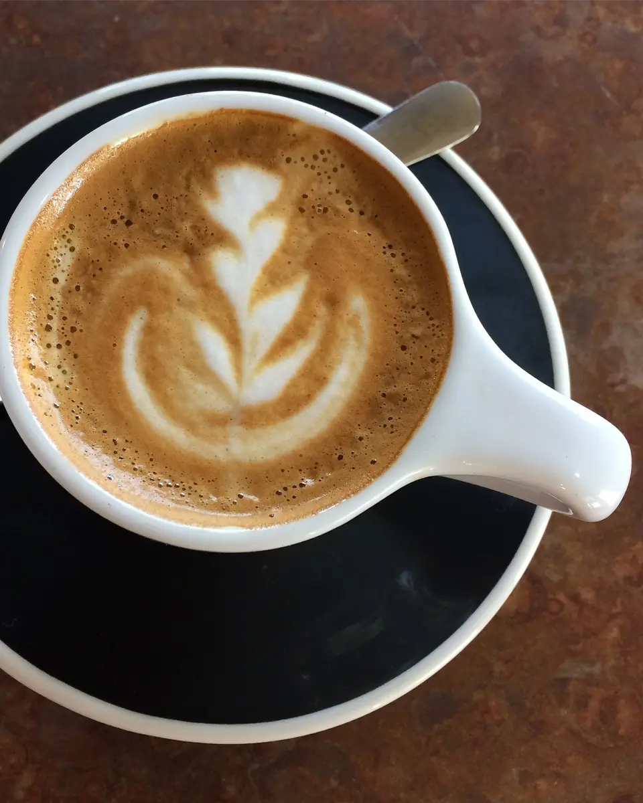
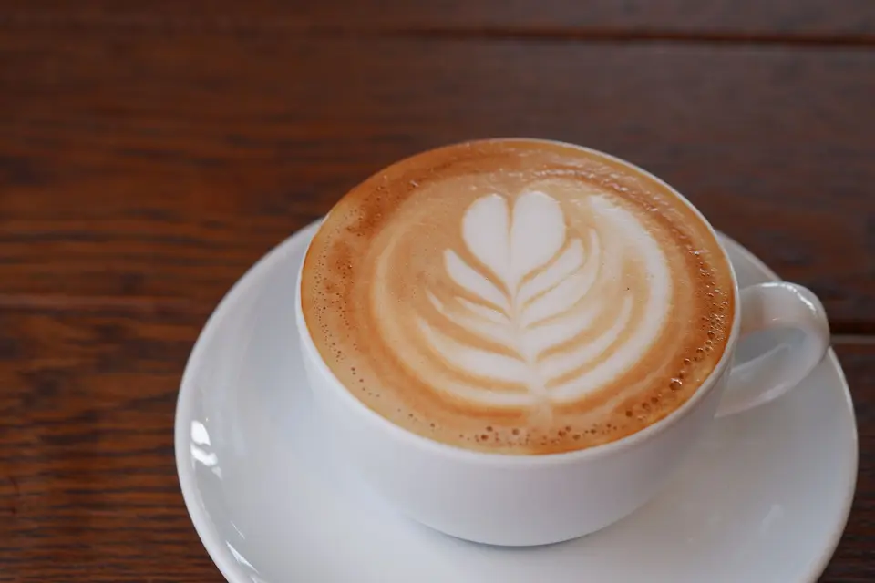
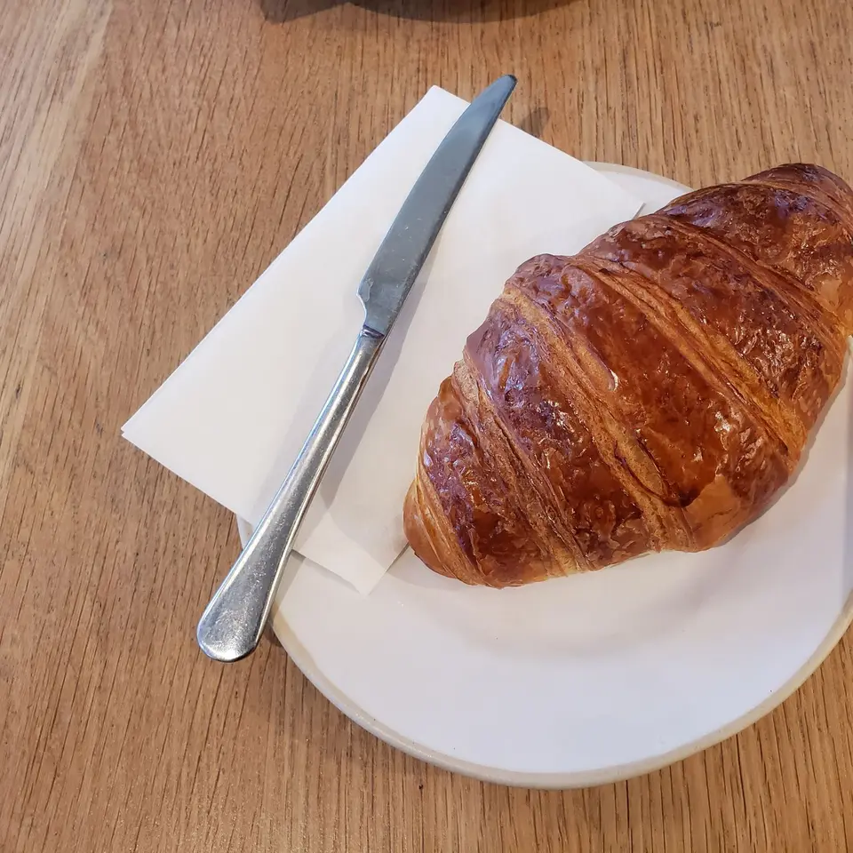
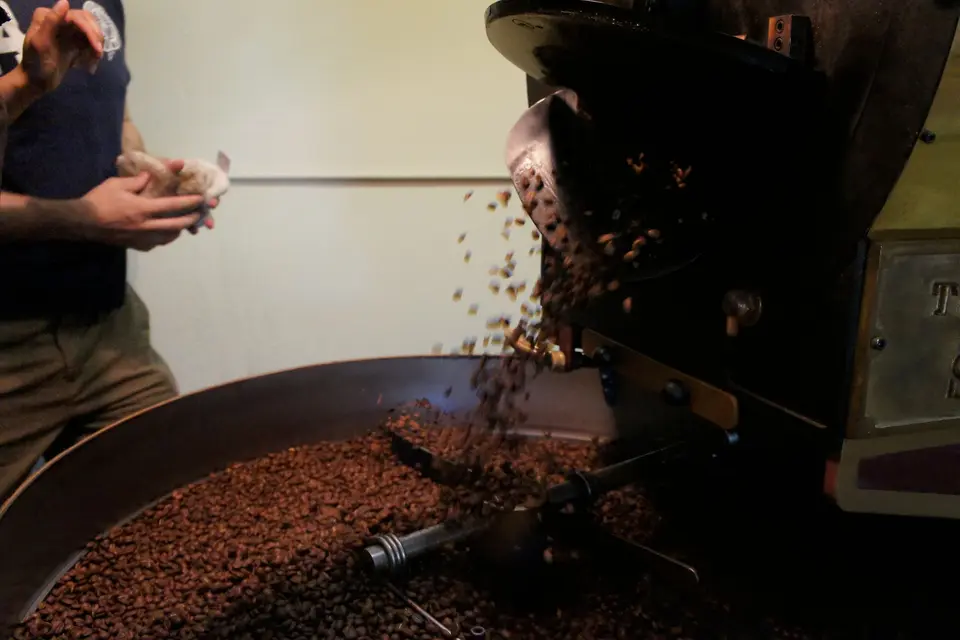
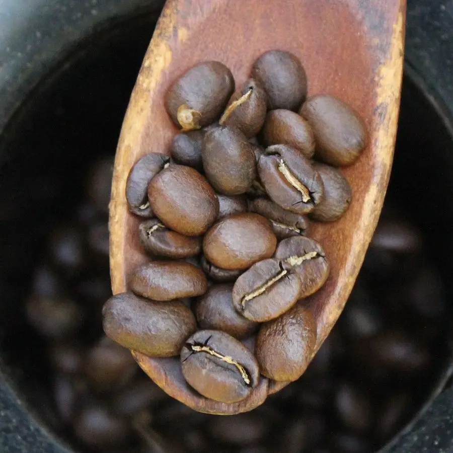
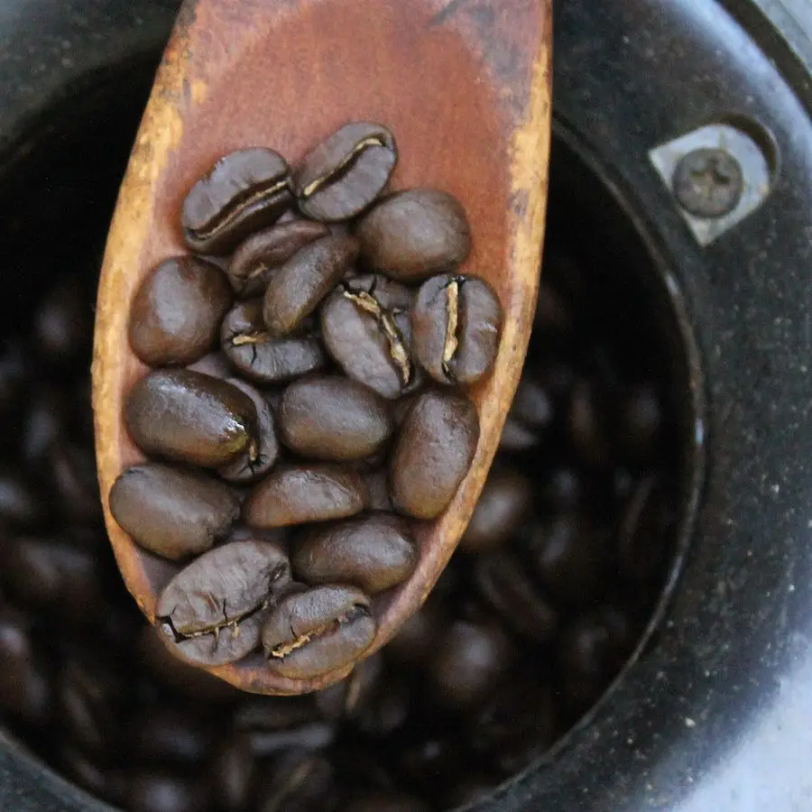
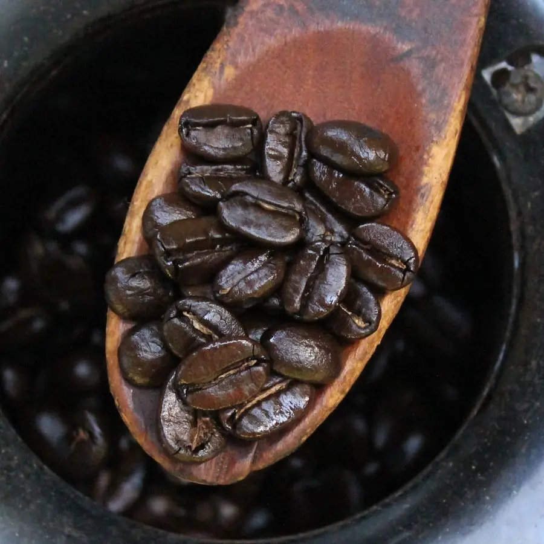
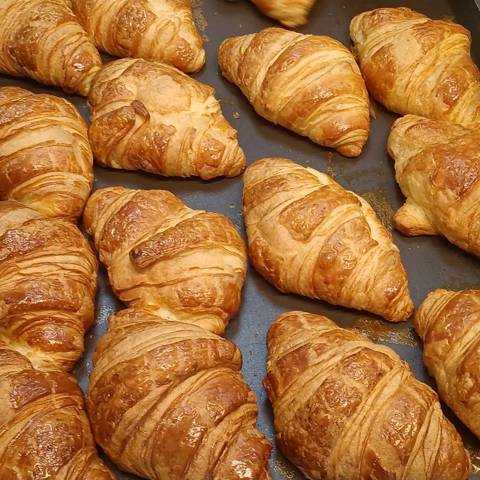

Кофейня и обжарка в Солодовом переулке
Открываемся в 7:30. Круассаны к этому времени уже остывают на противне.
Восемь мест у окна, стойка и ростер во дворе. Кофе можно взять с собой в свой стакан, тогда он на 20 ₽ дешевле.
Посмотреть меню


Обжарка
Ростер на шесть килограммов стоит во дворе, в бывшей дворницкой. Жарим по вторникам и пятницам с утра, поэтому в эти дни у кофейни пахнет хлебной коркой и немного дымом.
Пачку 250 г можно взять у стойки. Если нужно больше, напишите на zerno@example.com, соберём к следующей обжарке.

-

Светлая
Эфиопия, Иргачефф, мытая. Черника, бергамот, чайная кислотность. Для фильтра и аэропресса.
250 г — 1 100 ₽
-

Средняя
Бразилия и Колумбия пополам. Орех, молочный шоколад. На ней делаем все молочные напитки.
250 г — 950 ₽
-

Тёмная
Так тёмно мы не жарим. Если любите горечь, скажите бариста, подберём что-нибудь из средней.
не продаём
Как дойти
Солодовый переулок, 7, вход со двора через арку. Дверь синяя, над ней жестяная чашка.
От трамвайной остановки «Бульвар» четыре минуты пешком. Велосипед можно оставить у ростера, там есть дуга.
- Пн–Пт
- 7:30–21:00
- Сб–Вс
- 9:00–21:00
- Зерно и опт
- zerno@example.com
